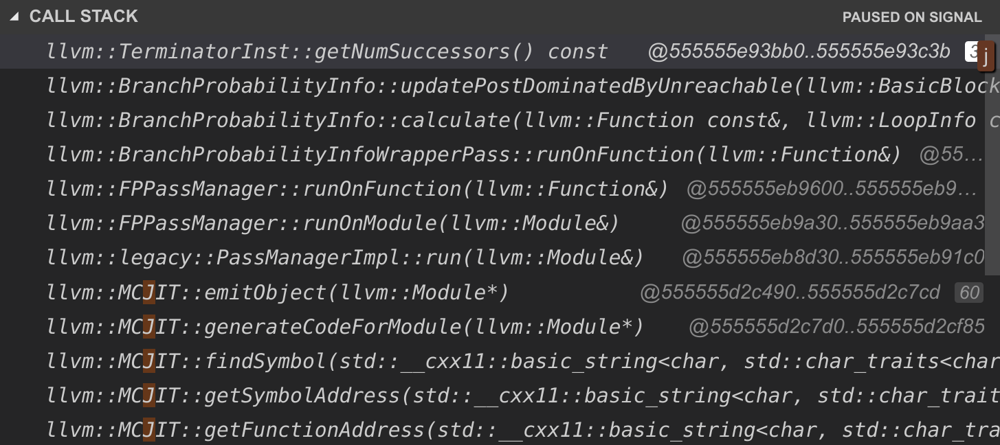

Tech Notes: Debugging LLVM + Rust
I’m working on a programming language, writing the compiler in rust. I’m stuck at this point from a segfault that occurs with the following IR (generated by my compiler):
; ModuleID = 'main'
source_filename = "main"
define void @main() {
entry:
%result = call i64 @fib(i64 1)
}
define i64 @fib(i64) {
entry:
%alloca = alloca i64
store i64 %0, i64* %alloca
%load = load i64, i64* %alloca
switch i64 %load, label %switchcomplete [
i64 0, label %case
i64 1, label %case1
]
switchcomplete: ; preds = %case1, %entry, %case
%load2 = load i64, i64* %alloca
%binop = sub i64 %load2, 1
%result = call i64 @fib(i64 %binop)
%load3 = load i64, i64* %alloca
%binop4 = sub i64 %load3, 2
%result5 = call i64 @fib(i64 %binop4)
%binop6 = add i64 %result, %result5
ret i64 %binop6
case: ; preds = %entry
ret i64 0
br label %switchcomplete
case1: ; preds = %entry
ret i64 1
br label %switchcomplete
This segfaults whenever I run my compiler, which currently compiles the code and immediately executed it in LLVM’s MCJIT.
Mystery SIGSEGV #
Whenever I run my code in my debugger, I find that I have a segfault which doesn’t occur (at least at the same time) as when I run my app on the command line.
VS Code’s debugger returns:

so something is happening during the FPPassManager. Apparently the FPPassManager is what handles generating code for functions (read in the source code)
getNumSuccessors was a bit nebulous for me… what does this function actually do? I wasn’t familiar with the term “successor”: it must be something custom to LLVM. Some Googling finds: http://llvm.org/docs/ProgrammersManual.html#iterating-over-predecessors-successors-of-blocks
So I guess successor is referring to the number of statements that immediately follow the existing statement. getNumSuccessors in core.h of llvm specifies there are function calls for a terminator. So what precisely is a terminator?
Looking through the LLVM source code again, it’s the classification for instructions that will terminate a BasicBlock. The list from LLVM9 looks like:
/* Terminator Instructions */
LLVMRet = 1,
LLVMBr = 2,
LLVMSwitch = 3,
LLVMIndirectBr = 4,
LLVMInvoke = 5,
/* removed 6 due to API changes */
Looking at the traceback, this is specifically occurring in the updatePostDominatedByUnreachable. The source code for that is:
/// Add \p BB to PostDominatedByUnreachable set if applicable.
void
BranchProbabilityInfo::updatePostDominatedByUnreachable(const BasicBlock *BB) {
const Instruction *TI = BB->getTerminator();
if (TI->getNumSuccessors() == 0) {
if (isa<UnreachableInst>(TI) ||
// If this block is terminated by a call to
// @llvm.experimental.deoptimize then treat it like an unreachable since
// the @llvm.experimental.deoptimize call is expected to practically
// never execute.
BB->getTerminatingDeoptimizeCall())
PostDominatedByUnreachable.insert(BB);
return;
}
The actual errors occurs on the first instruction of the assembly instruction:
; id = {0x00012806}, range = [0x000000000093fbb0-0x000000000093fc3b), name="llvm::TerminatorInst::getNumSuccessors() const", mangled="_ZNK4llvm14TerminatorInst16getNumSuccessorsEv"
; Source location: unknown
555555E93BB0: 0F B6 47 10 movzbl 0x10(%rdi), %eax
555555E93BB4: 48 8D 15 81 3B D5 01 leaq 0x1d53b81(%rip), %rdx
555555E93BBB: 83 E8 18 subl $0x
I can’t read assembler very well. But since this is a method, most likely the first instruction has to do with loading the current object into memory. Most likely then, getNumSuccessors is receiving a pointer to something it doesn’t expect. Most likely this is an NPE.
My hunch now is I have a basic block without a terminator statement, causing the JIT pass to fail.
There was a missing return statement on the main function. Adding that didn’t change anything.
Fixing the blocks to only have terminators did indeed fix the issue! Ultimately figuring out that a validator existed, and heeding it’s error messages lead to the solution.
https://github.com/toumorokoshi/disp/commit/1591788b8fc1871f1211c8ae6114e4d9a3fdf397